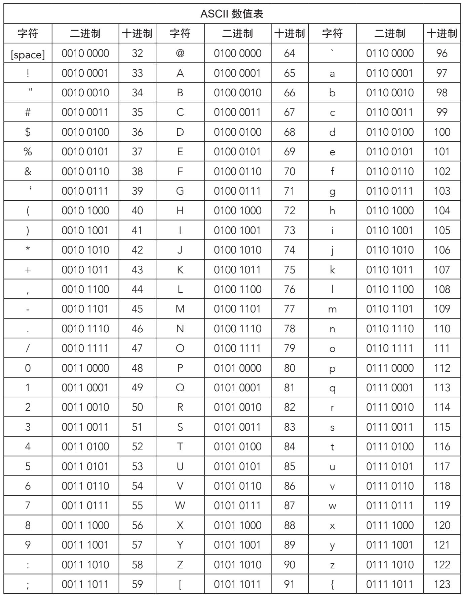
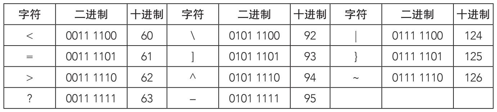
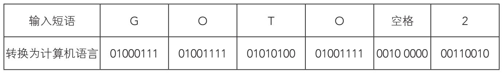

二进制应用广泛，其中一个应用方式就是用它表示一组具体的字符集，每个字符包括8比特，即一个字节。这些字符是由字母和数字混合编制的，代表传统通信中的基本符号。人们把这些字符称为ASCII代码，即美国信息交换标准代码。每组0和1的排列种数为：28=256。
内存字节
一台计算机的内存和存储容量是以字节的倍数计量的：
千字节（kB）：1 024字节
十亿字节（GB）：1 073 741 824字节
兆字节（MB）：1 048 576字节
太字节（TB）：1 099 511 627 776字节
借助ASCII代码，用户就可以将文本输入计算机。我们打出一个字母数字的字符时，计算机就把它转换为一个字节的数据，即长度为8比特的一串数字。比如，我们打出字母“A”，计算机就把它转为“0100 0001”。
二进制ASCII数值表表示所有常用的字符——26个大写字母、26个小写字母、10个数字、7个标点符号和一些特殊字符。所有字符见后页表，表分字符、二进制数字、十进制数字三列：

（续表）

用BASIC编程语言输入短语“GOTO 2”时，计算机就会把这些字符翻译为相应的二进制序列：

计算机就会按下列序列执行：
010001110100111101010100010011110010000000110010